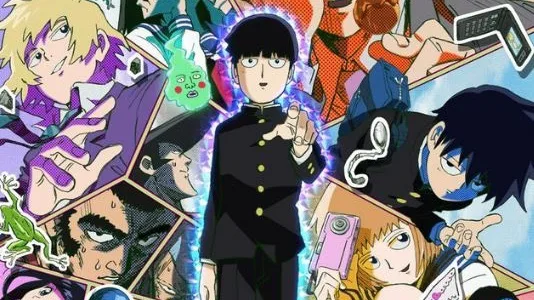
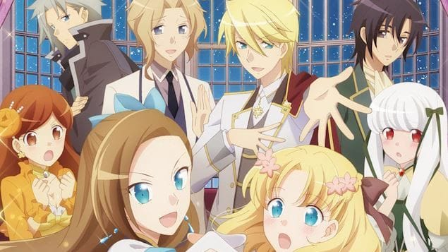

RSS Feed
RSS Feed
Reviews 7
04 Aug 2020Previously: One / Two / Three / Four / Five / Six
This time, I'm also reviewing books!
Darwin's Game
I forgot to review this one last time.
In short, it follows the "death game" formula: the protagonist gets sucked in a game (via a smartphone app in this case) that gives him powers and in which currency can be acquired by defeating (lethaly or not) other players. Of course there's a bunch of psychopaths, but also potential allies.
Really enjoyed it, it was pretty fun. The show is thoughtful about powers and how to use them. Nothing incredibly, but it's only an 11-episode show and it's well worth a watch.
Erased (Boku Dake Ga Inai Machi)
I really liked this one. The basic plot is that the hero is sent back to his elementary school past, where he endeavours to prevent the murder of three kids in his home town. These events are also connected to his present.
The story is really solid and there is some real mystery. The tone reminded of Parasyte a lot: it feels "mature" - it's darker than most anime, but never edgy.
Like Parasyte, this had the advantage to be an adaption of a finished series, and a short one at that — the anime is only 12 episodes long.
Really solid recommendation from me, there is no reason not to watch this.
Unsong
And now, a book review! Unsong is a book you can read for free online, written by the brilliant Scott Alexander (of Slate Star Codex's fame — one of my favorite blogs).
As for the (wild!) plot: in 1972, instead of sending men on the moon, the Apollo rocket crashed into the vast crystal sphere encircling the world. It turns out it was part of the vast machinery of heaven built by archangel Uriel to slow the divine light to a trickle, and ensure science works properly. With it cracked, divine light enters the world once more and as some technology stop working, the supernatural becomes possible once more. In particular, it is possible to speak some of the names of god in order to produce spell-like effects.
Unsong is imaginative and brilliant. There are many other things introduced in the universe besides the names of god, and their consequences are taken seriously (though always somewhat humorously as well). For instance, there is a whole branch of government (the titular Unsong) dedicated to enforcing copyrights on the names of god.
Unsong is brilliant, but it is also weird. Its lore centers around the Kabbalah, and it's full of kabalistic jokes. Things like "this word means X and Y and Z and so we get meanings A, B and C". It's clever and cute, but it works better the first three times than the 50th time. Towards the end, I got a bit tired of it, especially since it breaks the rythm of the descent towards the conclusion.
Unsong is really two intertwined stories of different magnitudes. On the one hand it is the story happening in the story's present in the 2010s, and on the other hand it is the story of how the world evolved since 1972, under the influence of the radical new conditions.
It's really hard to describe Unsong as a story I realize. I think the best thing would be to give it a shot. If you generally like fiction that is a little weird (e.g. Terry Pratchett, Snow Crash, ...) then I'd definitely recommend it. Ditto if you tend to enjoy Scott's normal writing.
The Rise and Fall of Software Recipes

Aka the banana book, after the lovely fruit peel that adorns the cover. It's written by Darius Blasband, the founder of Raincode.
Now, from reading the book's back cover, you'd be forgiven to think the book had some grand thesis about "software recipes" and methodologies.
In reality, the book never really bothers to define what a software recipe is (it does convey that it is a cookie cutter pattern to make software). Instead, it should be taken as Darius's working, tech & business, memoir.
In that sense, I think the book works relatively well. Darius describes himself as a "codeaholic", and he is definitely a compiler geek — which also happens to be my case. As such many chapters of the book where of particular interest to me. That being said, they remain accessible enough that any semi-competent programmer should be able to understand the subject matter.
I sometimes disagreed with Darius, and often wanted to add more nuance, but his opinions never struck me as wrong-headed. There's a lot of references to projects and experiences on the ground that help to lend weight to some of his points.
The writing is snappy and fun enough to keep you engaged. Chapters are typically not too long, and the books lends itself well to sporadic reading. It would actually have made a great toilet book. That being said, don't expect your mind to be blown away either. This is a no-nonsense collection software advice, stories and ideas. While there are definitely some nuggets of insight to glean there, I don't think this will cause anyone that wasn't already on board to reconsider their whole processes.
Kaguya-sama: Love is War
This was strongly recommended to me by my friend Gorby. And I have to admit: it's damn funny. The humor reminded me of Dumbbell nan Kilo, in a good way. Despite the silly tone, the last episode managed to have my heart in a vise. That's how you know it's good.
Also, I'm a sucket for that opening theme:
That Japanese crooner really did steal my heart 😍 I also like the visuals, it reminisced me of the better James Bond openings.
3-gatsu no Lion (March Comes In Like a Lion)
3-gatsu no Lion has an excellent MyAnimeList score (8.45) and has is often described as being great & artful. And I was curious to know what the fuss was about. Well, I ended up dropping it (for the nonce at least) after 10 episodes (out of 22 for the first season).
It's not bad by any stretch of the imagination. It's just... very contemplative? Slow? I think what I've seen so far could have been conveyed in half the time, there are very repetitive scenes. At the same time, it might have been deliberate. The anime certainly feels deliberate, and not like it's trying to please anyone, nor give itself a genre.
Of course, this is related to the subject matter, which is ... complex. It's about the state of mind of this young pro shogi player. I'll paste the MAL description:
Having reached professional status in middle school, Rei Kiriyama is one of the few elite in the world of shogi. Due to this, he faces an enormous amount of pressure, both from the shogi community and his adoptive family. Seeking independence from his tense home life, he moves into an apartment in Tokyo. As a 17-year-old living on his own, Rei tends to take poor care of himself, and his reclusive personality ostracizes him from his peers in school and at the shogi hall.
However, not long after his arrival in Tokyo, Rei meets Akari, Hinata, and Momo Kawamoto, a trio of sisters living with their grandfather who owns a traditional wagashi shop. Akari, the oldest of the three girls, is determined to combat Rei's loneliness and poorly sustained lifestyle with motherly hospitality. The Kawamoto sisters, coping with past tragedies, also share with Rei a unique familial bond that he has lacked for most of his life. As he struggles to maintain himself physically and mentally through his shogi career, Rei must learn how to interact with others and understand his own complex emotions.
Ultimately, I dropped it because I found myself dragging my feet a little to watch it, which is not a good sign. I might give another chance at some point, as I think there might be something great which I haven't gotten to.
Mob Psycho 100 (Season 1)

I almost dropped Mob Psycho 100 after the first episode, which repeated its "funny" shtick a bit too much, and I was unsure about the graphical style. I'm glad I didn't, as it turns out it's quite entertaining, and you get used to the goofiness.
I wouldn't call it groundbreaking or anything, but it's short (12 episodes) and watchable. I don't really have much more to say about it. It seems to be a very beloved show (8.5 rating on MAL), and I can understand, the anime is not incredible, but it is emminently sympathetic.
Hamefura

(Whole title "Otome Game no Hametsu Flag ..." or "My Next Life as a Villainess: All Routes Lead to Doom!")
This anime was not at all what I expected it to be. The premise is that the titular character gets reincarnated in a visual novel romance game, as the villainess character.
From this premise I expected a Shield Hero-like situation: the main character being treated unfairly and having (in this case) to battle its way to recognition.
Well, spoilers: that's not at all what happens. Instead this is a very wholesome sorta-kinda-harem anime.
And I really really loved it. I don't really know why - the story is nothing to write home about. I'm guessing it's the wholesomeness of the whole affair that just put me in a good mood. It reminded me a bit of what I liked about K-On!.
Gleipnir
Plot-wise, Gleipnir is a sort of death game where protagonists have special abilities. In that, it's quite similar to last season's Darwin's Game, but the similarity stops there.
Whereas Darwin's game is very focused on the strategies and combat, Gleipnir is more about the mystery of the game's existence. Well, at least it tries to.
The start is intriguing enough, but then the anime tramples around in its midsection, not achieving much. The mystery plotline picks up towards the end, just enough to keep things interesting. It's not all that masterfully executed however. They also could easily have concluded the 13 episode arc with some something more impactful happening.
I was ready to give up around episode 8, then got interested enough to finish, but I'm not sure I'll care enough for season 2 (if they make it).
Yesterday wo Uttate
I started watching this show on the basis of its wistful mood. I'd seen a short review of it (part of an overview of the whole season) that praised its little philosophical sentences — but as it turned out there were relatively few of them.
The show is about a sort of amorous ... rectangle (?) between two guys and two gals. I won't deny the setting and the mood is nice, but unfortunately the story gets nowhere pretty fast. A lot of time is spent of repetitions rather than evolution in the characters' relationship. The conclusion comes out of the blue, and does not really feel satisfying, or really coherent with what transpired before.
Maybe it can just be seen as a realistic (or more realistic than usual) take on human relationship — with a unmistakable Japanese flair.
This feels like it could have been so much better if the story had been better conceived though.